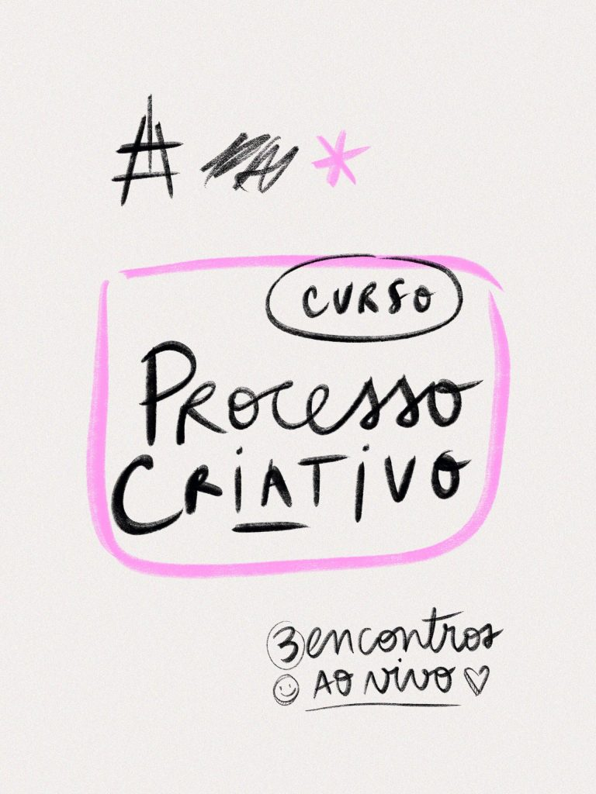
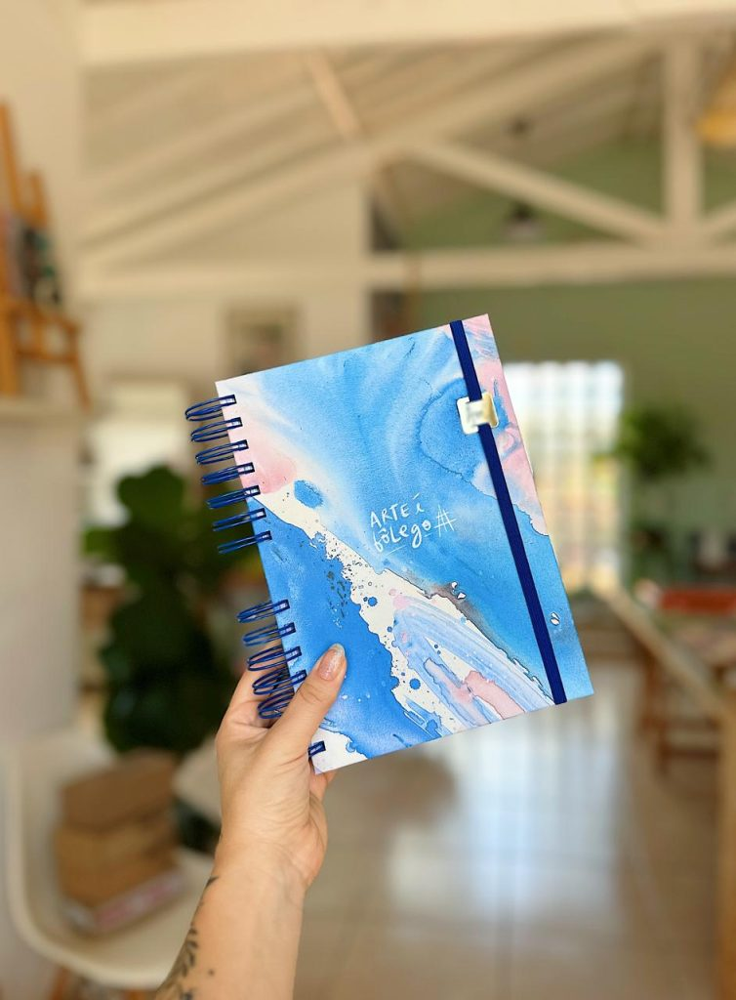
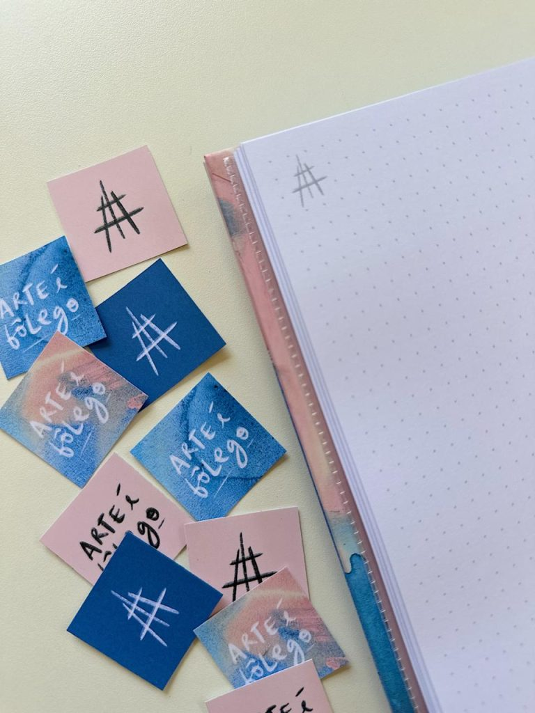

Curso de Processo Criativo - turma 7
R$ 590,00
Em até 3x de R$ 196,67 sem juros
Data: 24 e 26 de novembro às 19:00h | duração 2h | 2 aulas + 1 encontro bônus de bate-papo
» A inscrição inclui o Diário de Processo Criativo que será enviado para sua casa!
* Online e ao vivo via Zoom.
* As aulas ficam gravadas por 30 dias.
* Vagas limitadas.
Importante:
* Ex-aluna tem 50% de desconto, solicite seu cupom clicando em "Sou ex-aluna".
* O frete de envio do produto está incluído no valor da inscrição.



